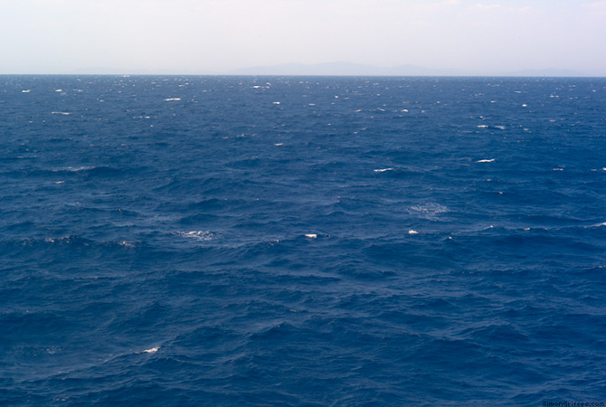

Gone Swimming
And snorkeling and sun-bathing and star-gazing until the end of the week. I hope that if you are also hot in the Northern Hemisphere you can do some of the same. When I return there should be much to report in the cosmic sphere: the difficulty of trying to find some constellations.
In the meantime, push the Random button sandwiched somewhere at the bottom of the page. It’s fun! (At least for me.)

· · · · · · · · · · · · · · · · · · · ·